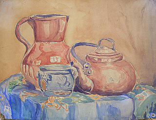

Le marronnier de la maison familliale.
Eglise Charentaise.
Huile sur toile dimensions: 55 cm - 46 cm
Église (charentes)
Aquarelle; dimensions: 26 cm - 20 cm

Petit chateau charentais
Aquarelle; dimensions: 26cm 20cm
Vue de La Rochelle
Aquarelle 32 cm sur 25 cm
La maison familiale
Aquarelle; dimensions: 26 cm - 20cm

Nature morte (oeuvre de jeunesse)
Aquarelle 37 cm sur 29 cm
Village charentais (1931)
Aquarelle 28 cm sur 30 cm